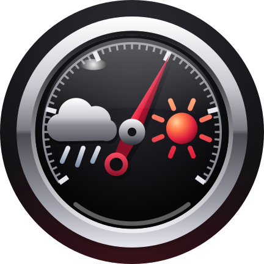
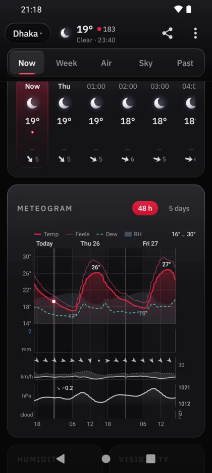
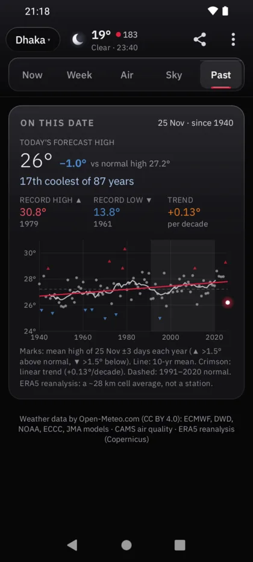

Weatherglass
A pocket weather instrument on a black glass dial.
- Model consensus: ECMWF, GFS, ICON, GEM and JMA side by side, with a confidence score for each.
- Air and heat: AQI against WHO and Bangladesh limits, plus wet-bulb heat stress and a planner for when it's safe to go out.
- History: how today ranks against every year since 1940. Also a scrubbable 48-hour meteogram and home-screen widgets.
KotlinComposeGlance widgetsOpen-Meteo

